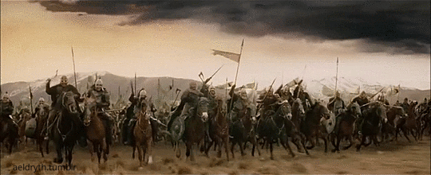
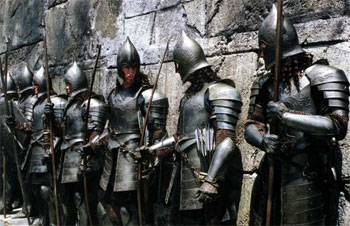
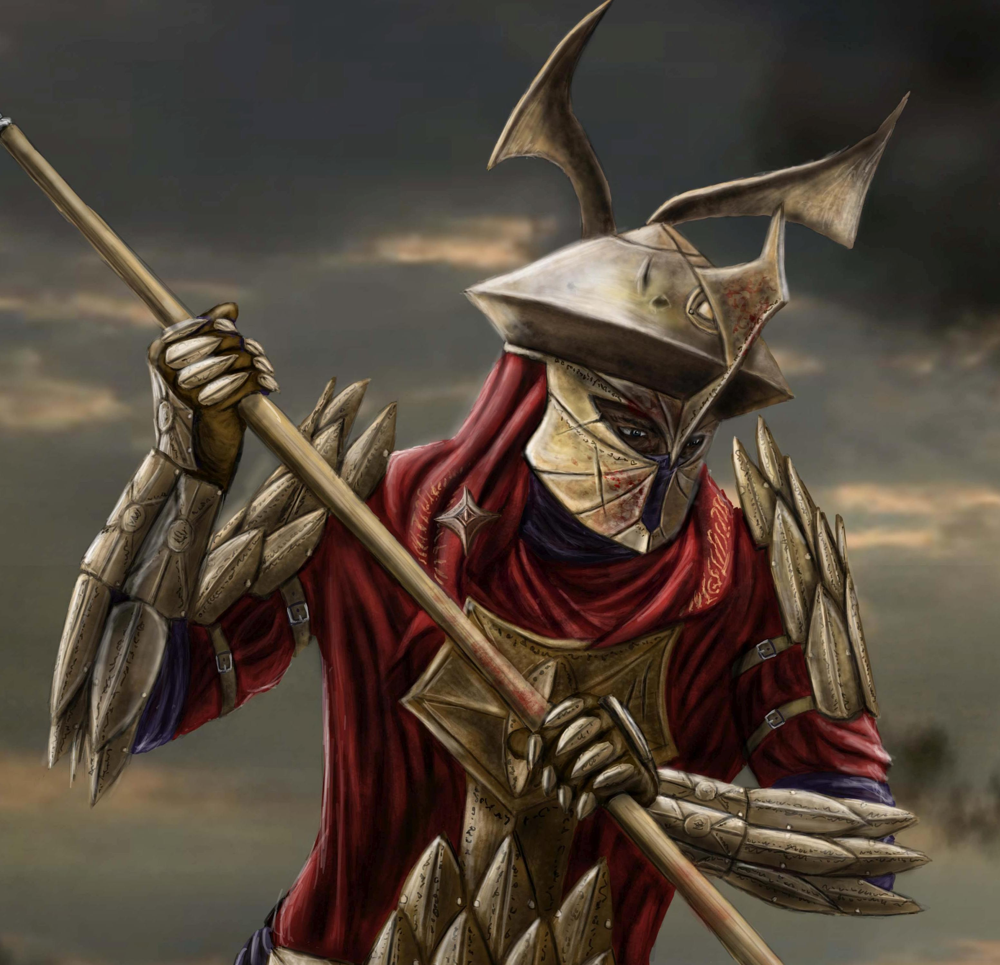
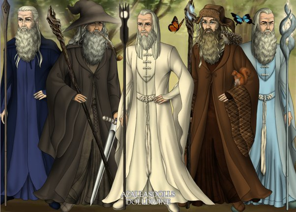
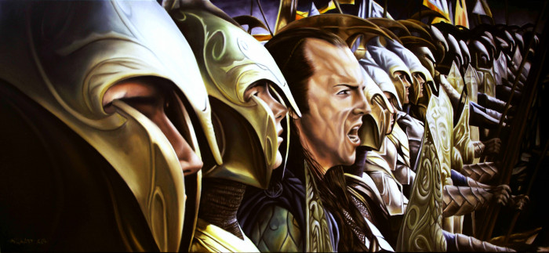
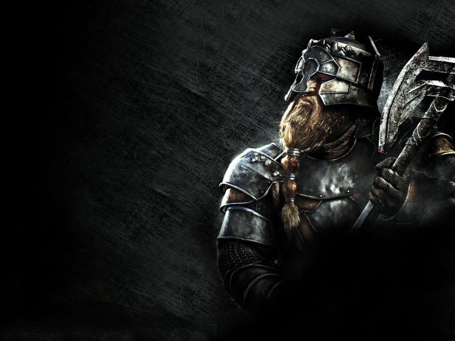
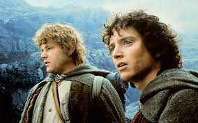
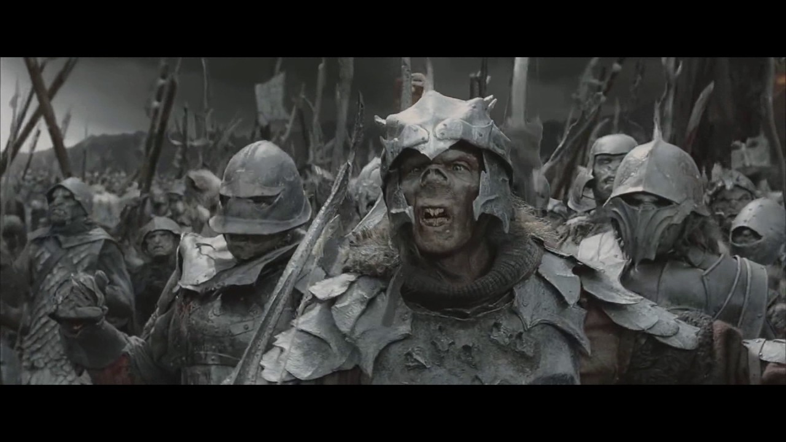

A Rohirrimek Rhovanion és Éothéod északi embereitől származtak , akik az Anduin Nagy Folyó völgyében éltek, de Calenardhonba vitték őket , egy síkságra, amelyet Gondor helytartója , Cirion örökre oda adományozta nekik a segítségért, amit felajánlottak Gondornak a nagy szükség idején.
A rohírok magas, szőke és többnyire kék szeműek voltak, a férfiak nagydarabok, púposak és jóképűek, míg a nők különösen szépek. Nemesek, bátrak, erős akaratúak és hevesen függetlenek voltak, saját nyelvükön és kultúrájukon belül maradva. Lovaik nagyon fontos értéket képviseltek mindennapi életükben, teljes kultúrájuk a tenyésztésükön és kereskedésükön alapult.
Numenóriak

A numenóriaakat két csoportra bonthatjuk, az egyik csoport a Fekete Numenóriak akiket királypártiaknak hívunk és a másik csoport akik tisztelték a valákat akiket Elendil Islidur apja vitt el északra ahol megalapították Arnort és Gondort.
A númenóreaiak az edainok sarja volt , a legnemesebb emberfaj az első korban . Ezek az emberek a második kor elején Númenor szigetét kapták a valáktól . A Dúnadánok közvetlen, nemesi leszármazottai lennének Középföldén.
A fekete númenóiak , akiket eredetileg Királypártiaknak vagy a Királyembereinek neveztek, a númenóriak bukott csoportja volt, akik azoktól származtak, akik hűek voltak a númenóri jogarhoz, de szemben álltak a valákkal és a tündékkel való kapcsolatokkal.
Keletlakók

A keletlakók Rhûn területén Mordortól és a Rhûn-tengertől keletre éltek.
A keletlakók gyakran szembehelyezkedtek a világ szabad népeivel , akik Morgoth jelentős szövetségesét alkották az első korban , később pedig Szauron buzgó, népes vazallusát a második és harmadik korban.
Mágusok, Istarok

5 varázsló érkezett középföldére a másod és harmad korban, 2 kék mágus, Sarumán a fehér mágus, Szürke Gandalf és Barna Radagast.
Manwë azt hitte, hogy Melkor-Morgoth utódja, Szauron visszatér a hatalomba. Ezután összehívott egy tanácsot, amely azzal zárult, hogy a valák úgy döntöttek, hogy három követet küldenek Középföldére . A küldetésük az lenne, hogy megnyugtassák a Szabad Népeket , hogy a Hatalmak nem hagyták el őket, és a Sötét Nagyúr ellen irányítsák őket, később még csatlakozott 2 mágus.
Tündék

A tündék voltak Ilúvatar első és legidősebb gyermekei, akiket Arda földi fajának legtisztességesebbnek és legbölcsebbnek tartottak . Quendi-nek ( Qunya : "a beszélők"; egyes szám Quendë ) nevezték magukat , utalva arra, hogy teremtésükkor ők voltak az egyetlen élőlények, akikről tudtak, hogy beszéltek.
A Vanyar és a Ñoldor, akik a leginkább vágytak Valinorba, a legnagyobb sebességgel nyomultak tovább, és elsőként értek el a partokhoz, és egy szigetre vitték őket Valinorba, amelyet a Vala Ulmo vezetett át a Belegaeren . A telerik voltak a leglassabbak a csoportok közül, mivel vonzották őket az erdők és folyók, amelyekkel Középfölde nyugati és déli részén találkoztak. Ez arra késztette őket , hogy több különböző csoportra szakadjanak szét, mint például a nandorok , akik Wilderland erdőtündékévé , majd később Beleriand- okká váltak . Néhány teleri, akik nem szerették a tengert , és részben Elwë Nan Elmothban való eltűnése miatt egy időre visszahúzódtak, és Régió és Neldoreth erdős területein telepedtek le , amelyekből később Doriath lett . A tengerhez vonzódó telerik a nyugati partok mentén telepedtek le, később a Círdan által uralt Falathrimmá váltak, aki megalapította Eglarest és Brithombar tengerparti városait . Végül a telerik többsége nyugatra ment a Tol Eressëán , Olwë vezetésével .
Törpök

A törpéket Aulë készítette , akit ők maguk Mahalnak neveztek , ami azt jelenti, hogy „készítő”. Aulë nem volt hajlandó megvárni Ilúvatar Gyermekeinek eljövetelét , mert türelmetlen volt, és arra vágyott, hogy legyen valaki, aki megtanítsa a mesterségét és a mesterségét. Ezért titokban, Középfölde hegyei alatti csarnokban megalkotta a törpök első hét atyját.
A törpök hét atyja közül csak egynek ismerjük a nevét aki nem más I.Durin.
Az első korban Durin Azanulbizar területén kezdte el építeni Khazad-dûm termeit.
A másod korban Durin a III. a legerősebb törp gyűrűt ajándékba kapta a tünde kovácstól Celebrimbor-tól.
A harmad korban felébresztették a Mória mélyén élő Balrogot, vissza foglalták Erebort Smaugtól a sárkánytól.
Hobbitok

A hobbitok , más néven félszerzetek , Középfölde halandó faja voltak . Bár pontos eredetük nem tisztázott, kezdetben Középfölde északi régióiban és Anduin völgye alatt találták meg őket . A harmadik kor elején a hobbitok északra és nyugatra költöztek. Fajuk nagy része végül a másod kor 1601. évében alapított Megye földjén telepedett le , bár a Stoor-hobbitok közül néhányan az Anduin-völgyben maradtak.
Orkok

Az orkoknak 3 fajtájuk van ezek a Hegyi orkok, a Mordori fekete urukok és az Uruk-haiok.
Hegyi orkok: kis termetűek, a Ködhegység barlangjaiban és Mória bányáiban élnek. A kobold (goblin) szót általában rájuk alkalmazzák. A napfénytől rosszul lesznek. A nagyobb fajta orkok a „kukac” gúnynevet használják rájuk. A kiegészítő és támogató harci feladatokat (nyomkövetés, felderítés) általában ők végzik, és kiváló íjászok. Szaglásuk kiváló és éjjel-látók.
Mordori fekete urukok: Nagyobb termetű ork fajta. Ezek alkotják Szauron katonaságának jelentős részét.
Uruk-hai: A legnagyobb termetű orkok, ezeket Szarumán tenyésztette ki, a fekete urukok és más fajok (egyesek szerint emberek) keresztezéséből. Nagy termetűek. Az egyetlen ork-fajta, amely jól viseli a napfényt. Hatalmas távolságokat képesek pihenés és élelem nélkül megtenni, gyűlöletük Ilúvatar gyermekei iránt még félelmüket is legyőzi. Az ork fajok közül a legerősebbek és legszívósabbak. Íjászként és könnyű- vagy nehézgyalogosként is beválnak, a mordori orkokkal ellentétben inkább az északi emberekéhez hasonló stílusú fegyvereket (nagy tiszafa íjat és pajzsot, ork-szablya helyett pedig rövidebb, széles pengéjű, kétélű kardot) viselnek.